Paper Reading Notes · arXiv:2610.22985v1 · NeurIPS 2026
Prism Attention: Proposal-Refined Index Sharing Mechanism for Efficient LLM Inference
Token-level sparse attention has an unadvertised cost: before you can attend to 2,048 of 128K keys you have to find them, and every layer pays for that search. Prism keeps one layer in four doing the search — but exports an over-sized candidate pool instead of a frozen top-κ list, and lets the three layers in between re-rank that pool for 0.011 ms apiece.
Authors: Zhenxu Tian, Kebin Liu, Zhengwu Yang, Yi Su, Qingqing Dang, Yanlin Sha, Kaipeng Deng, Dianhai Yu, Yanjun Ma, Juntao Li, Min ZhangAffiliations: Soochow University · Baidu Inc.Paper: arXiv:2610.22985Source: 20 pages, appendices A–F
💡 Click any image to open the full 300 DPI original; click again or press Esc to close.
01 · Overview
At a glance
The paper opens with a cost that is easy to forget. Token-level sparse attention tells you that only a couple of thousand of the 128,000 keys in the cache deserve a full dot product — but it does not tell you which two thousand, and finding out means scoring the whole cache. Prism Attention is an argument about that discovery step and about how often it must be paid for: build a deliberately over-sized candidate pool at one layer in four, then let each of the three layers in between re-rank that pool instead of inheriting a frozen list. Everything else in the paper — the INT2 key cache, the Triton kernels, the SGLang measurements — exists to make that idea cheap enough to be worth having.
End-to-end decode · 128K · BSZ=16
3.36×15.03 ms → 4.47 ms vs FlashAttention, Qwen3-4B in SGLang
Reasoning average (AIME24/25, GPQA, MATH500)
71.43 / 73.83Qwen3-4B / Qwen3-8B; full attention is 71.95 / 74.33
LongBench average
54.98 / 54.97Qwen3-4B / Qwen3-8B; full attention is 55.07 / 54.58
Reading conventions: every number on this page is the paper's own unless it carries a tag. Anything this page organizes, compares or recomputes is marked [organized] — a count or grouping read directly off the paper's tables, pattern strings or plots — or [estimated] — arithmetic performed on paper numbers, with the arithmetic shown inline so you can check it. Symbols follow the paper: $L_t$ is the context length at decoding step $t$, $N$ the number of transformer layers, $\kappa$ the sparse budget, $\rho$ the proposal expansion factor, $n=\rho\kappa$ the candidate-pool size, and $F$ / $S$ denote proposal (anchor) and refined (shared) layers. The paper quotes no monetary figures, so a single dollar sign is used freely as the inline-math delimiter throughout.
The three claims
The introduction states its contributions as a chain in which each link is a different kind of object — an observation, a mechanism, and an implementation trick. Keeping them apart matters when reading the experiments, because the ablations in Section 5 test them separately.
An observation. Re-read from the point of view of attention dynamics, the shift of salient tokens across depth is highly localized. The exact top-κ sets differ layer to layer, but the disagreement concentrates at the boundary of the previously selected region rather than spreading over the context. This is the diagnosis of why rigid index sharing loses accuracy (Section 3, Figures 1–3).
A mechanism. Prism replaces static support sharing with coarse-to-fine selection: a proposal layer exports an expanded pool $C^{F}_{t}$ of $n=\rho\kappa$ candidates, and each refined layer re-scores only inside that pool to pick its own top-κ (Section 4.1, Equations 3–6).
Two cost-side components. Dynamic Index Refinement makes the per-refined-layer re-selection nearly free and length-independent; Quantized Proposal Generation compresses the key cache used for proposal scoring to INT2, so the one operation that still touches the full context streams a quarter of a byte per element instead of two (Section 4.2, Equations 7–9).
Read in that order, the paper is a rarity in the sparse-attention literature: the method is essentially the observation, restated as an algorithm. There is no new training objective, no architectural surgery and no learned router — the only offline step, the proposal/refined partition, is inherited wholesale from IndexCache (Bai et al., 2026) and explicitly frozen after calibration.
The bet in one sentence: if inter-layer index drift is a boundary effect rather than a reorganisation of attention, then a 4× candidate pool plus a 0.011 ms local re-rank buys back most of the accuracy static reuse throws away. Section 3 supplies the premise; Sections 5–7 test the conclusion on two Qwen3 models, three architectures and GLM-5.2.
02 · Background
Background: the index tax of token-level sparsity
Autoregressive decoding is not arithmetic-bound, it is cache-bound: at every step the new token must look at every key and value produced so far — the KV cache — and that cache grows with the conversation. Sparse attention attacks this by attending to a small subset, but the subset has to be chosen, and the choosing is a second pass over the same cache. The paper's framing — repeated in its abstract, its introduction and its conclusion — is that this second pass is what has kept token-level sparsity from paying off in practice.
Two terms, one of which does not shrink
Write the per-step, per-layer cost of a token-sparse decoder as two terms. The attention itself is cheap: κ dot products of length d. The selection is not: to know which κ, you score the query against all $L_t$ cached keys. At the paper's main operating point — κ = 2048 against a 128K cache — the attention term is about 1.56% of what a dense pass would do, while the selection term is still 100% of it [estimated]: 2048 / 131072 = 1.56%.
Multiply by depth and the asymmetry gets worse before it gets better. With 36 layers and no sharing, a decoding step pays 36 full-cache scoring passes to build indices and 36 sparse passes to use them. The paper's remedy divides the first number by the sharing ratio: the group-4 partition of Table 4 is FSSSSSSFFSSSSFSFSFFSSSSSSSFSSSSSSSSF, i.e. 9 proposal layers and 27 refined ones [organized], so on average a layer pays for a 32,768-token scoring pass while attending to 2,048 tokens — a residual ratio of 16× [estimated]: 131072 / 4 = 32768, then 32768 / 2048 = 16.
That residual 16× explains the second half of the method. A scoring pass is not FLOP-bound; it streams keys, so its cost tracks bytes rather than elements. Dropping the key used for scoring from BF16 to 2 bits divides that stream by eight [estimated]: 16 bits / 2 bits = 8. This is the difference between a proposal layer that is 2.07× faster than FlashAttention at 128K and one that is not (Section 6). Note the qualifier: the quantized copy is only ever used to rank candidates. The attention itself still runs on the BF16 cache, so no accuracy is traded at the softmax.
Terminology, fixed here for the rest of the page.Index construction is the score-everything-and-take-top-κ pass that selects tokens. Index reuse is copying an already-built index set into another layer. Index refinement is Prism's third option: re-scoring a restricted candidate set. The first is expensive and fresh, the second is free and stale, the third is cheap and nearly fresh — and the whole paper is an argument that the third point on that line is the one worth sitting at.
Where the paper puts its neighbours
Section 2 sorts the literature into two paradigms — block-level and token-level — and then, separately, into work on reusing whatever the first two produce. The grouping below is this page's, but every method named in it is cited in the paper's own related-work paragraphs; the labels in the middle column are the paper's inline citations, not a re-reading of its bibliography.
How the paper divides the sparse-attention literature (grouped by this page; the citations follow the paper's own inline labels and were not re-checked against its reference list)
Family
Representative work, as the paper cites it
What it buys — and what it still pays for
Block-level, prefill-oriented
MInference 1.0 (Jiang et al., 2024); FlexPrefill (Lai et al., 2025); XAttention (Xu et al., 2025); SeerAttention (Gao et al., 2024); SpargeAttention (Zhang et al., 2025)
Filters critical blocks to accelerate the compute-heavy prefill phase. Granularity is a block, so a salient token in an unimportant block is still discarded.
Block-level, decode-oriented
Quest (Tang et al., 2024); Rectified Sparse Attention (Sun et al., 2025); LServe (Yang et al., 2025); SeerAttention-R (Gao et al., 2025)
Attacks the KV-cache bandwidth bottleneck of decoding by loading fewer pages or blocks. Prism shares Quest's premise — score cheaply, then load — but keeps token granularity.
Block-level, trained end-to-end
Native Sparse Attention (Yuan et al., 2025); MoBA (Lu et al., 2025); MiniCPM4 (MiniCPM Team et al., 2025); InfLLM-v2 (Zhao et al., 2025)
Trains the sparsity pattern so both phases speed up and the block-level accuracy loss is mitigated. Requires a training budget Prism deliberately avoids.
Token-level
DeepSeek Sparse Attention, or DSA (Liu et al., 2025); GLM-5 (Zeng et al., 2026)
Finer granularity keeps context that rigid block boundaries would discard — the paradigm Prism builds on. Pays a full-context scoring pass per layer to choose, which is exactly the cost Prism attacks.
Cross-layer index sharing
TidalDecode (Yang et al., 2024); LessIsMore (Yang et al., 2025); OmniKV (Hao et al., 2025); Kascade (Deshmukh et al., 2025); HyLRA (Ai et al., 2026); IndexCache, or IDC (Bai et al., 2026)
Removes the redundancy of rebuilding indices at every layer by propagating them from anchor layers. Assumes attention patterns are depth-invariant — the assumption Figures 1–3 are built to break.
The trade-off the paper says nobody has escaped
Section 2.2 closes with the sentence that motivates everything after it: existing sharing methods "remain constrained by a trade-off between anchor-layer cost and reuse-layer accuracy." More anchors mean fresher support and more index construction; more reuse means cheaper steps and staler indices. The contributions of the field it reviews — Kascade and HyLRA casting anchor placement as dynamic programming, IndexCache searching greedily for placements robust to error propagation — all push on which layers are anchors. Prism's move is orthogonal and, in retrospect, obvious: leave the placement alone and change the payload.
A disambiguation worth recording: reference [29] in the paper's own bibliography is also called "Prism" — spectral-aware block-sparse attention. The subject of this page is arXiv:2610.22985, the proposal-refined index-sharing paper; the name collision is unrelated work.
Takeaway: the interesting quantity is not the sparsity ratio κ/L but the ratio between the cost of finding κ tokens and the cost of using them — and sharing addresses the first only by a factor equal to the reuse ratio, which is why a quantizer has to enter the picture before the account balance turns positive.
03 · Observations
Observations: the drift is local
Section 3 proposes nothing; it measures, and it measures in a deliberate order. Each of the three exhibits removes one alternative explanation for the previous one, which is why they are worth reading together rather than as three separate plots.
Step 1 — overlap decays with layer distance (Figure 1)
Two layers share an index set to the extent that their top-κ token sets intersect. Figure 1 measures that overlap for every pair of layers separated by an offset of 0–7, on Qwen3-4B, for three datasets and two context lengths, averaged over 32 heads, 32 consecutive decoding steps and 10 samples per dataset (the full protocol is in Appendix A). The y-axis is broken: offset 0 reads 1.00 because a layer compared with itself shares every index, and the axis then restarts at 0.20 for the comparisons that actually mean something.
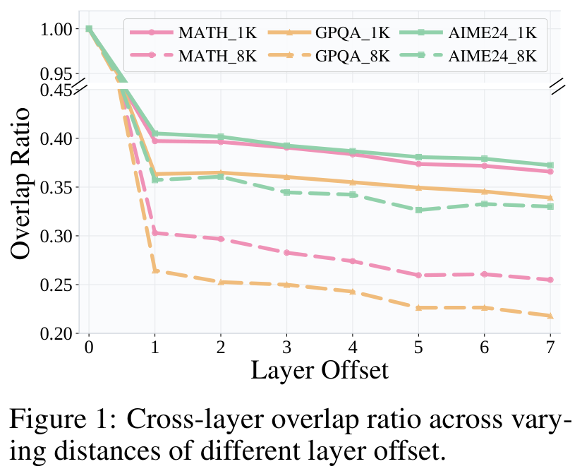
Figure 1: Cross-layer overlap ratio across varying distances of different layer offset.
Every real comparison lands far below 1.0 and keeps falling. At offset 1 — the very next layer — the three 1K curves (solid) drop to roughly 0.36–0.41, and the three 8K curves (dashed) to roughly 0.26–0.36. By offset 7 the solid curves sit at about 0.33–0.37 and the dashed ones at about 0.21–0.26. Two readings matter for the design. First, the decay is steepest in the first step and then slow and monotone: there is no distance at which reuse "stabilises". Second, the dashed 8K curves lie below their 1K counterparts at every offset, so the same layer distance buys less overlap exactly when the context is long — the regime sparse decoding exists for. A proposal layer's top-κ is therefore wrong for at least half of the layers that inherit from it, and increasingly so as serving scales.Report p.1
This is the diagnosis of static reuse, but on its own it is also an argument against Prism: if the sets disagree that much, sharing anything looks hopeless. The figure therefore sets up the question that the next panel answers — whether the disagreement is structured.
Step 2 — the disagreement has a shape (Figure 2)
Figure 2 takes each refined layer's own top-128 indices and asks where they would have ranked in the proposal layer's scores. Three regions: inside the proposal's top-128 (green), ranks 128–511 (orange), and outside the top-512 altogether (red). The orange band is precisely the extra room a ρ = 4 pool would provide, so the plot is a direct test of whether expansion can capture the drift.
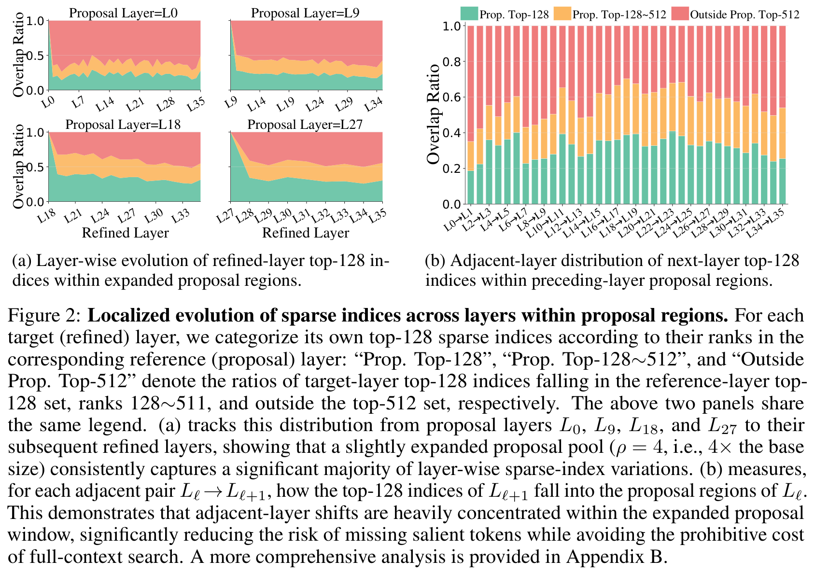
Figure 2: Localized evolution of sparse indices across layers within proposal regions. For each target (refined) layer, we categorize its own top-128 sparse indices according to their ranks in the corresponding reference (proposal) layer: "Prop. Top-128", "Prop. Top-128∼512", and "Outside Prop. Top-512" denote the ratios of target-layer top-128 indices falling in the reference-layer top-128 set, ranks 128∼511, and outside the top-512 set, respectively. The above two panels share the same legend. (a) tracks this distribution from proposal layers $L_0$, $L_9$, $L_{18}$, and $L_{27}$ to their subsequent refined layers, showing that a slightly expanded proposal pool ($\rho = 4$, i.e., 4× the base size) consistently captures a significant majority of layer-wise sparse-index variations. (b) measures, for each adjacent pair $L_{\ell} \rightarrow L_{\ell+1}$, how the top-128 indices of $L_{\ell+1}$ fall into the proposal regions of $L_{\ell}$. This demonstrates that adjacent-layer shifts are heavily concentrated within the expanded proposal window, significantly reducing the risk of missing salient tokens while avoiding the prohibitive cost of full-context search.
Panel (a) traces four proposal layers forward. The green band — what rigid reuse would hand over — is a minority everywhere, roughly a fifth to a third of the refined layer's support, and it thins with distance from L0 / L9 / L18 / L27. The orange band, the part that only exists because the pool was expanded to 512, contributes another fifth or so and stays visible all the way to the panel's right edge. What is left in red is what no expansion to 512 could reach. Panel (b) repeats the measurement for all 35 adjacent pairs: green plus orange consistently covers roughly half to two thirds of the next layer's top-128. So the drift is real but bounded — it lands in a ring just outside the proposal's own top-κ far more often than in the rest of the context, which is what "localized" means operationally here.Report p.2
There is a subtlety in this figure that the appendix later makes quantitative. Index counts understate how much of the attention actually survives: most of the tokens that migrate out of the shared set carry little mass individually. Figure 9 puts a number on it — the roughly one-third of indices that rigid reuse already shares are worth 75.5% of the refined layer's attention mass — which is why a pool that catches only part of the migration is enough to keep the softmax honest.
Step 3 — expansion converts the structure into coverage (Figure 3)
The third exhibit is the bridge from observation to mechanism. Instead of four proposal layers, it sweeps all 36, producing a layer-by-layer coverage matrix for Qwen3-4B on AIME24 traces, and then re-draws the same matrix with the proposal expanded from top-128 to top-256 (ρ = 2) while the refined layer still selects 128.
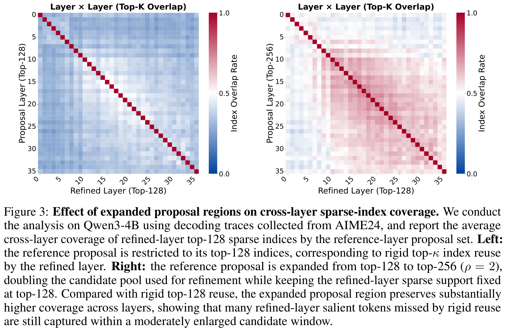
Figure 3: Effect of expanded proposal regions on cross-layer sparse-index coverage. We conduct the analysis on Qwen3-4B using decoding traces collected from AIME24, and report the average cross-layer coverage of refined-layer top-128 sparse indices by the reference-layer proposal set. Left: the reference proposal is restricted to its top-128 indices, corresponding to rigid top-κ index reuse by the refined layer. Right: the reference proposal is expanded from top-128 to top-256 ($\rho = 2$), doubling the candidate pool used for refinement while keeping the refined-layer sparse support fixed at top-128.
Rows are proposal layers, columns refined layers, and the colour is the share of the column layer's top-128 that lies inside the row layer's proposal; the diagonal is 1 by construction and burns red in both panels. Left: away from the diagonal the whole field is blue, i.e. 0.0–0.3 on the colour bar, with the darkest cells at maximum layer distance — rigid reuse is worst exactly where a 9-proposal-layer schedule needs it most. Right: with the pool merely doubled to 256, the same off-diagonal field turns pink to red, roughly 0.4–0.7, and the brightening is largest in the band a few layers off the diagonal. Doubling the pool roughly doubles coverage cell by cell, which is the empirical licence for the "slightly expanded candidate pool" the method is built on.Report p.4
Takeaway (the three-step logic): drift exists (Fig 1), drift is bounded and sits at the boundary of what was already selected (Fig 2), and a cheap expansion of that boundary recovers most of the lost coverage (Fig 3). The statement that carries the method is the second one — "indices change at the edge" — because a method that copies a top-κ set has no way to express it, while a method that passes a slightly larger set and re-ranks it does.
04 · Method
Method: a proposal, then a refinement
Prism changes two things and inherits a third. It changes what a proposal layer exports — an expanded candidate pool instead of a top-κ set. It changes what a refined layer does — re-score inside the pool instead of copying. It inherits, untouched, the assignment of which layers are which: the offline greedy calibration of IndexCache (Bai et al., 2026), run once on a held-out subset of OpenR1-MATH-220k with token-level cross-entropy as the objective, at a 1:3 anchor-to-shared ratio, then frozen for every downstream evaluation. No part of Prism is trained.
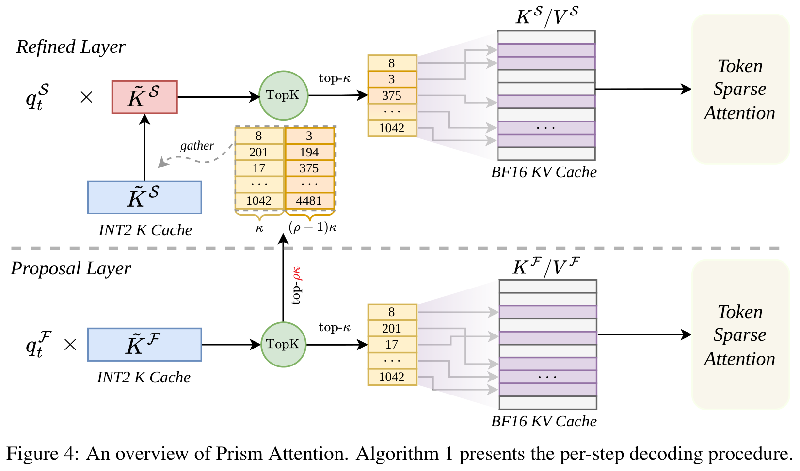
Figure 4: An overview of Prism Attention. Algorithm 1 presents the per-step decoding procedure.
Two stacked panels, one per layer type. Bottom (proposal layer): the query is scored against the layer's INT2 key cache, a TopK produces the top-ρκ candidate list, and that list is used twice — sliced to its first κ entries for the proposal layer's own sparse attention over the BF16 KV cache, and passed upward in full. Top (refined layer): the inherited list arrives as token ids, a gather pulls exactly those rows out of the refined layer's own INT2 key cache, the refined query is scored against that block alone, TopK keeps κ, and only the survivors are read from the BF16 KV cache for the actual attention. The two orange columns in the middle are drawn κ and (ρ−1)κ wide, which is the pool's literal shape: the first κ candidates plus ρ−1 further κ-sized blocks. Three details are easy to miss and all three matter — every layer keeps its own quantized key copy, because keys differ per layer; the quantized keys are used for both the proposal score and the refinement score; and the BF16 cache is only ever touched κ times per layer, which is where the bandwidth saving comes from.Report p.5
Notation and the ideal support
At decoding step $t$ in layer $\ell$, the query $q^{\ell}_{t}$ is compared with the cached keys $K^{\ell} = \{k^{\ell}_{1}, \dots, k^{\ell}_{L_t}\}$. A scoring function $\phi$ — the same token-selection score the base method uses, defined operationally in Equation 9 — gives a relevance value for every historical token:
$$s^{\ell}_{t}(i) = \phi\!\left(q^{\ell}_{t},\, k^{\ell}_{i}\right), \qquad i \in [L_t] \tag{1}$$
and the layer's ideal sparse support is the top-κ of that vector:
Equation 2 is where the bill comes due: producing $T^{\ell}_{t}$ exactly requires evaluating $\phi$ against all $L_t$ cached tokens, an $O(L_t)$ selection cost per layer on top of the $O(\kappa)$ attention it enables. Everything that follows is an attempt to stop paying that cost at every layer without letting the support go stale.
What static reuse does
Partition the layers into proposal layers $F$ and refined layers $S$, and give each refined layer an association $f(S) \in F$ pointing at its preceding proposal layer. The conventional method writes:
$$T^{S}_{t} \leftarrow T^{F}_{t} \tag{3}$$
— one assignment, no scoring. Equation 3 is the target of the paper's criticism, and the criticism is precise: it "assumes that the exact identity of salient tokens remains unchanged across layers." Figure 1 shows the assumption failing, and Section 3 explains the consequence — the mismatch between reused indices and true salient tokens "accumulates as the distance from the proposal layer increases."
The proposal: export a wider set
Prism's first change is to give the proposal layer a second output whose size is a controlled overshoot:
Two things are worth pinning down about Equation 4. First, $\rho$ is small in practice — 4 for long-context tasks ($n$ = 8192) and 2 for reasoning ($n$ = 4096) — because, per Section 3, the drift lives just outside the boundary and a 4× window already reaches it. Second, the proposal layer does not pay for the expansion: it "still attends to its own top-κ tokens, while caching $C^{F}_{t}$ for downstream reuse." The extra ρκ − κ candidates cost storage and a longer TopK, not attention FLOPs.
The refinement: re-rank inside the pool
The second change is what the refined layer does with the pool. It recomputes scores, but only over the inherited candidate set:
$$\hat{s}^{S}_{t}(i) = \phi\!\left(q^{S}_{t},\, k^{S}_{i}\right), \qquad i \in C^{F}_{t} \tag{5}$$
Equations 5–6 are the whole trick, and their cost profile is the reason the paper is short: the search space is $|C^{F}_{t}| = \rho\kappa$, which is independent of $L_t$. A refined layer therefore costs the same at 8K and at 128K, and the only length-dependent work left in the model is the proposal layer's. The paper's own summary of the transformation is exact: reuse becomes "proposal-constrained local search," where $C^{F}_{t}$ supplies a high-recall region and the refinement absorbs the localized deviations.
What is genuinely new here, and what is not. The partition, the anchor ratio, the calibration corpus and the greedy search are IndexCache's; the paper says so and does not claim otherwise. The delta is a change of payload: a refined layer receives a region rather than a decision, and spends a small, length-invariant amount of work converting one into the other. That is a smaller claim than "a new sparse attention algorithm," and it is the reason the ablations in Section 5 isolate calibration and refinement as separate rows.
The per-step procedure
Algorithm 1 folds the two equations into a decoding loop. It is worth reading line by line, because it is where the bookkeeping — the association function, the κ-slice, the shared candidate cache — actually lives.
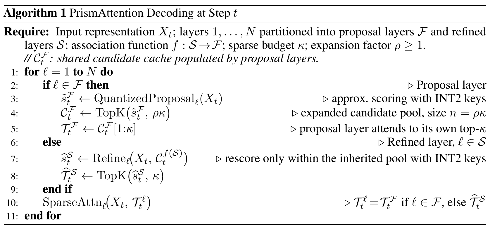
Algorithm 1: PrismAttention Decoding at Step t
Inputs: the representation $X_t$, layers 1…N split into proposal set $F$ and refined set $S$, the association $f : S \rightarrow F$, the sparse budget κ and the expansion factor ρ. Line 3 scores the whole context with INT2 keys (the only full-context operation in the loop); line 4 keeps ρκ of it as the shared candidate pool; line 5 slices the first κ of that same sorted list for the proposal layer's own attention, which is why the expansion costs the proposal layer nothing. The refined branch never re-scores history: line 7 hands it the pool of its associated proposal layer $C^{f(S)}_{t}$ and rescores only those rows, and line 8 keeps κ. Line 10 is the only place the BF16 K/V cache is read. Two consequences follow directly from the listing and are the ones to hold onto when reading the efficiency section: the loop's cost is dominated by whichever layers execute line 3, and the cost of lines 7–8 does not contain $L_t$ anywhere.Report p.19
Making the proposal affordable: INT2 keys
Even at one layer in four, proposal construction is the remaining full-context pass, and the paper is explicit that it is bandwidth-bound rather than compute-bound: "each proposal layer must repeatedly access a large historical key cache." The remedy is to keep a second, very small copy of the keys for scoring. Each full-precision key vector of head dimension $d$ is cut into $M = d/g$ groups,
and each group is quantized on its own. The scheme is group-wise, asymmetric and 2-bit ($b = 2$), so every group carries a private scale and zero-point,
Per-group asymmetry is the right choice for this particular job. Keys are heavy-tailed and channel-wise heterogeneous, so a single global scale would spend most of its four levels on a few large channels; taking max and min within each group of size $g$ lets the four levels $\{0,1,2,3\}$ cover the range the group actually occupies. The cost model follows immediately: 2 bits per element against BF16's 16 divides the scoring pass's bytes by eight [estimated]. What the paper does not state is the group size $g$ — it appears only as a symbol in $M = d/g$ — which is one of the items in the "worth testing" list in Section 8.
The max over heads, and why GQA makes it necessary
Under GQA, several query heads read the same key. Scoring them independently would mean streaming one key block once per query head, which is exactly the redundant traffic the quantization is trying to remove. Equation 9 collapses the group first:
where $G$ is the set of query heads assigned to a shared KV group. The paper's justification is purely an efficiency one — "the max-reduction aggregates multiple query heads into one score per KV head, so each KV head is loaded only once per decoding step, avoiding redundant memory accesses across grouped heads." There is a second reading available, which the paper leaves implicit: max is the recall-maximising reduction, keeping a token if any head in the group cares about it, which is the right bias for a proposal whose errors are corrected downstream by the refined layer's re-ranking.
Configuration, walked down to layers
Abstract as Equations 1–9 are, the method is specified by a handful of numbers. Following them onto an actual model is the quickest way to see where the work lands.
Layers. Qwen3-4B has 36 transformer layers and 32 attention heads (Appendix A). Under the group-4 partition used throughout, 9 layers build proposals and 27 refine them [organized], read off Table 4's string FSSSSSSFFSSSSFSFSFFSSSSSSSFSSSSSSSSF: the proposal layers are layers 0, 7, 8, 13, 15, 17, 18, 26 and 35. Under group-9 the same string count gives 4 proposal layers (0, 7, 13, 18).
Budget and pool. κ = 2048 with ρ = 4 for long context, so $n$ = 8192; ρ = 2 with $n$ = 4096 for reasoning. A refined layer therefore examines 8192 of the 131,072 possible rows at 128K, i.e. 6.25% of the context [estimated]: 8192 / 131072.
Head grouping. The SGLang measurements in Appendix D use "the tensor shapes of one TP8 rank (4 query heads, 1 KV head, head dimension 128)." Combined with the 32-head count in Appendix A, that implies 8 KV heads shared by 32 query heads, so $|G| = 4$ query heads per KV head and the max in Equation 9 runs over four terms [organized].
Storage. Each layer keeps a BF16 K/V cache plus a 2-bit key copy used only for scoring. The copy is one eighth the size of the K cache it duplicates [estimated]: 2 bits / 16 bits. The paper reports no memory measurement for it.
Takeaway: the algorithm is three lines of control flow — propose wide, refine narrow, attend — and the engineering is the two numbers that make it pay: 0.011 ms for the refinement (which contains no $L_t$) and 8× fewer bytes for the proposal (which does). Everything in the next two sections is a measurement of those two numbers and of what the accuracy gives up in exchange.
05 · Accuracy results
Accuracy: best average among the sparse baselines
The evaluation uses Qwen3-4B and Qwen3-8B, both reasoning-tuned models that emit long thinking traces. Reasoning is measured on AIME24, AIME25, GPQA-Diamond and MATH500 with Pass@1 over 64, 8 and 16 sampled answers respectively and a 32,768-token generation cap; long-context understanding uses the LongBench subsets whose average input length exceeds 8192 tokens, with generation capped at 4096. The baseline set is full attention plus four sparse decoders — Quest (Tang et al., 2024), LessIsMore, or LIM (Yang et al., 2025), SeerAttention-R (Gao et al., 2025) and IndexCache (Bai et al., 2026) — all run at κ = 2048, with Prism configured at ρ = 2 for reasoning and ρ = 4 for long context.
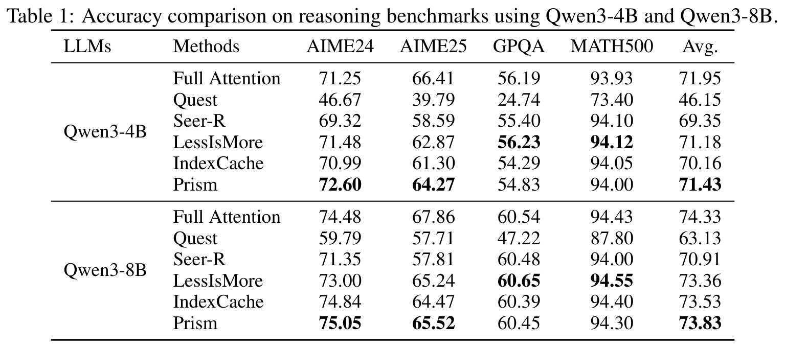
Table 1: Accuracy comparison on reasoning benchmarks using Qwen3-4B and Qwen3-8B.
Read the four subset columns before the average, because the average hides the pattern. On Qwen3-4B, Prism takes the best sparse average (71.43) — 25.28 points above Quest, 2.08 above Seer-R and 1.27 above IndexCache — and it does so on the back of AIME24 (72.60), where it actually edges past full attention (71.25). On Qwen3-8B the same method lands at 73.83 against full attention's 74.33, a 0.50-point gap that comes almost entirely from AIME25 (65.52 vs 67.86); GPQA (60.45 vs 60.54) and MATH500 (94.30 vs 94.43) are level. Two honest observations. First, the gap between IndexCache and Prism is small on MATH500 and GPQA and large on AIME — the harder and longer the reasoning, the more the refinement buys, which is what the localized-drift story predicts. Second, Prism beating full attention on 4B-AIME24 is a 64-sample estimate on a 30-problem set; the paper does not claim it and this page does not either.Report p.7
The paper's aggregate claims are computed the way one would hope. The "1.46 points over IndexCache on the two AIME subsets" is the mean of the two models' two-subset means — 68.435 vs 66.145 on 4B and 70.285 vs 69.655 on 8B, averaging to 1.46 [estimated], reproduced here only to confirm the paper is not cherry-picking a single model. The same arithmetic on LessIsMore gives the quoted 1.21.
Long context: where the mechanism is supposed to matter most
LongBench is the more interesting test, because the drift in Figure 1 worsens with context length — if Prism's story is right, this is where static reuse should bleed the most accuracy.
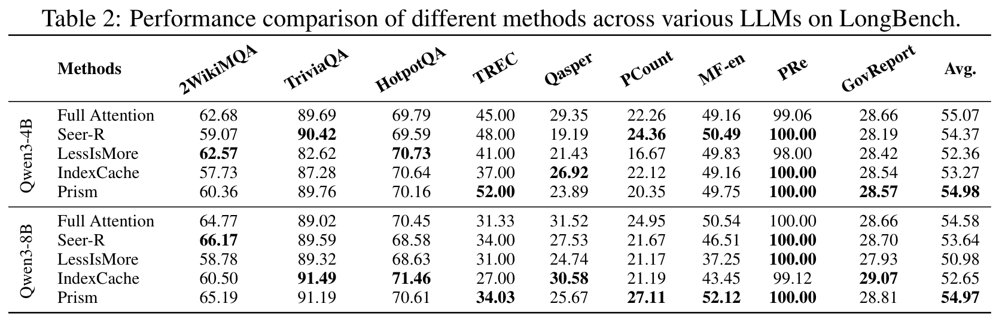
Table 2: Performance comparison of different methods across various LLMs on LongBench.
Nine subsets, printed with rotated headers in the original: reading them bottom-up gives 2WikiMQA, TriviaQA, HotpotQA, TREC, Qasper, PCount, MF-en, PR-en and GovReport [organized from the rotated header text]. Per-column behaviour matters more than the averages. Prism is the only sparse method that improves on full attention's TREC score on 4B (52.00 vs 45.00, against 48.00 for the next best) and it is the best method in the PCount column on 8B (27.11, above full attention's 24.95). The averages then read 54.98 on 4B (full attention 55.07, IndexCache 53.27) and 54.97 on 8B (full attention 54.58, Seer-R 53.64, IndexCache 52.65). The offsetting weakness is Qasper, where Prism trails full attention on both models (23.89 vs 29.35 on 4B, 25.67 vs 31.52 on 8B) — a reminder that an aggregate of nine heterogeneous tasks is doing a lot of work in the headline number.Report p.7
Set against the baselines the paper names, the ordering is stable: Prism is first among sparse methods on both models and both benchmark families, and on 8B-LongBench it is first outright, slightly above full attention. What it is not is uniformly better than full attention — on 4B-LongBench it is 0.09 points behind, and on Qasper it is well behind. That is the honest shape of a 2048-of-131072 sparse decoder.
The Pareto picture
Section 5.3 closes its accuracy discussion with the trade-off plot that the efficiency claims are usually judged against: accuracy against average per-token decoding latency, with every point measured inside SGLang.
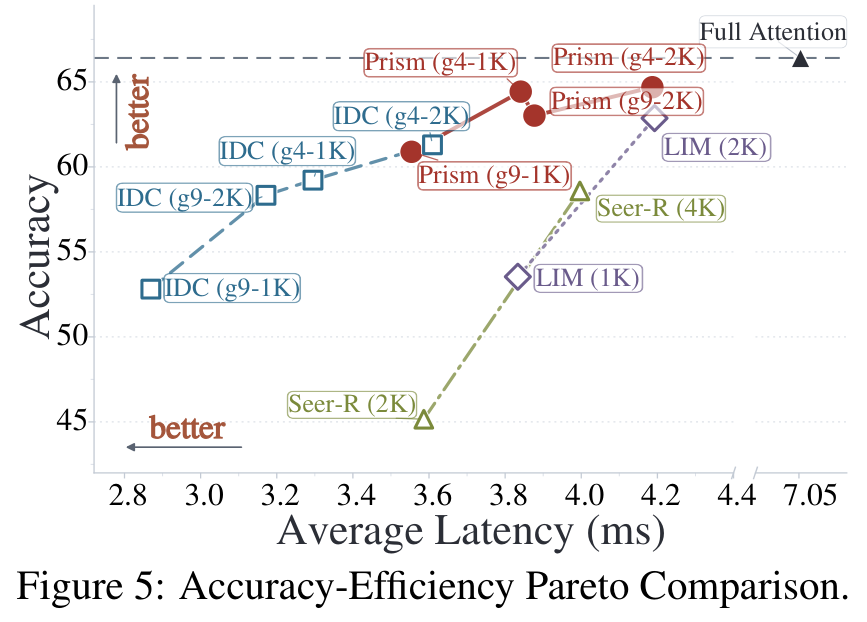
Figure 5: Accuracy-Efficiency Pareto Comparison.
Axes: AIME25 accuracy (vertical) against average latency in ms (horizontal, broken between 4.4 and 7.05 where full attention sits). Every baseline cluster is below and to the left of Prism's. Prism-g4-1K is the reference point the text quotes: 64.43 accuracy at 3.84 ms, which is 1.84× faster than full attention while retaining 97.0% of its accuracy, and it strictly dominates both LIM-2K (62.87 at 4.19 ms) and Seer-R-4K (58.59 at 4.00 ms). The point that keeps the result honest is IDC-g4-1K: 0.55 ms faster, but 5.21 points less accurate — the refinement is not free, it is simply priced. Note also that the two Prism-g9 points sit below their g4 counterparts: sharing across eight layers instead of three is cheaper and less accurate, exactly the trade-off Section 2.2 described.Report p.7
Ablation: which half of the method does the work
Table 3 is the most informative single exhibit in the paper, because it switches on the components independently and shows that neither half is sufficient. It is run at κ = 1024 (not the 2048 of the main experiments) on Qwen3-4B, with ρ = 4 in every proposal-refined row.
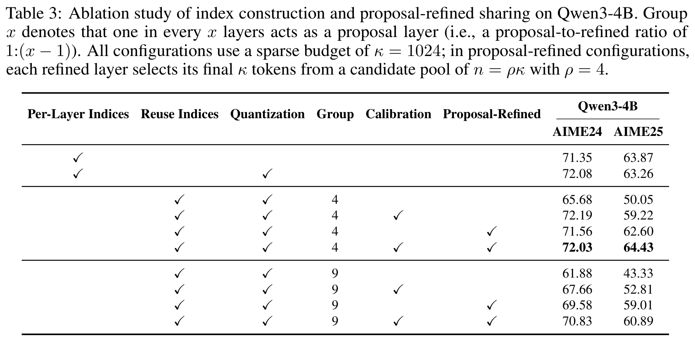
Table 3: Ablation study of index construction and proposal-refined sharing on Qwen3-4B. Group x denotes that one in every x layers acts as a proposal layer (i.e., a proposal-to-refined ratio of 1:(x − 1)). All configurations use a sparse budget of κ = 1024; in proposal-refined configurations, each refined layer selects its final κ tokens from a candidate pool of n = ρκ with ρ = 4.
Row 1 is the expensive ceiling — rebuild indices at every layer — at 71.35 / 63.87. Row 2 shows that at 4B and κ = 1024 plain reuse costs almost nothing on AIME24 (72.08) but already loses 0.61 on AIME25. Row 3 adds the quantized proposal and the model collapses on AIME25 (50.05): an INT2-scored, statically reused index set is a bad index set. Rows 4–5 are the two repairs taken separately, calibration alone (72.19 / 59.22) and refinement alone (71.56 / 62.60); row 6 takes both and recovers to 72.03 / 64.43. The group-9 block tells the same story with larger amplitudes: 43.33 → 52.81 (calibration) → 59.01 (refinement) → 60.89 (both), where the refinement contributes more precisely because indices travel further. The one number the paper passes over without comment is that row 6 (64.43) is higher than row 1 (63.87): at κ = 1024, proposal-refined sharing edges out exhaustive per-layer indexing.Report p.9
That last comparison deserves caution rather than celebration. AIME25 with 30 problems and avg@64 has a noisy mean, and the paper reports no confidence intervals anywhere; a 0.56-point difference between two rows of a single 4B model is well inside what one would expect from re-sampling. What the table does establish robustly is the ordering of the three regimes — quantized static reuse ≪ calibration ≪ calibration + refinement — and the fact that the two fixes are close to additive, which is what a design in which one fixes the payload and the other fixes the placement should look like.
Sensitivity: how much expansion is enough
The two knobs introduced in Equations 4 and 6 both have an interior optimum, and Figure 8 is the sweep that locates them.
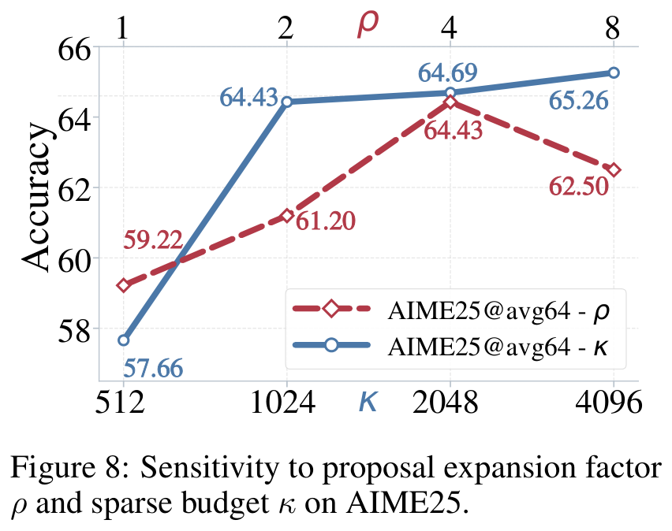
Figure 8: Sensitivity to proposal expansion factor ρ and sparse budget κ on AIME25.
Two curves on a dual x-axis. The dashed ρ curve (top axis) rises with expansion — 59.22 at ρ = 1, 61.20 at ρ = 2, 64.43 at ρ = 4 — and then falls at ρ = 8 (62.50). The shape is the argument: ρ = 1 is static reuse restored, ρ = 4 is the point where the pool has reached the boundary ring, and ρ = 8 adds candidates that are mostly noise the refined layer cannot filter out at κ = 1024. The solid κ curve (bottom axis) climbs monotonically — 57.66 at κ = 512, 64.43 at 1024, 64.69 at 2048, 65.26 at 4096 — and flattens: most of the gain arrives by κ = 1024, which is why the main experiments can afford κ = 2048 for long context and still be faster than dense. The paper's reading, that ρ between 2 and 4 with κ between 1024 and 2048 is the sweet spot, is a statement about this one 4B model on this one benchmark and should be inherited with that caveat.Report p.9
Takeaway: accuracy-wise Prism is a modest, consistent win — first among sparse methods on both benchmark families, within half a point of full attention on 8B reasoning and 0.09 on 4B LongBench. The ablation is the more valuable result: it shows that the two ingredients are separately necessary and roughly additive, and that the quantized proposal on its own is actively harmful, which is the paper's strongest implicit argument that proposal and refinement are one idea rather than two.
06 · Systems & efficiency
Systems: the cost lands on one layer in four
The efficiency story is told at three levels — a single kernel, a served model, and the end-to-end step — and the three levels agree. All measurements are on NVIDIA H800 GPUs: the kernel numbers come from custom Triton kernels timed under CUDA-graph replay with no tensor-parallel sharding, and the serving numbers come from the same kernels integrated into SGLang.
Before taking the three levels one at a time, it is worth putting the two halves of the argument on a single picture: which layers are proposals (searched offline, then frozen) and what each layer's index stage costs (measured). The paper states the blending formula and the measured breakdown in separate places; the chart below puts them together.
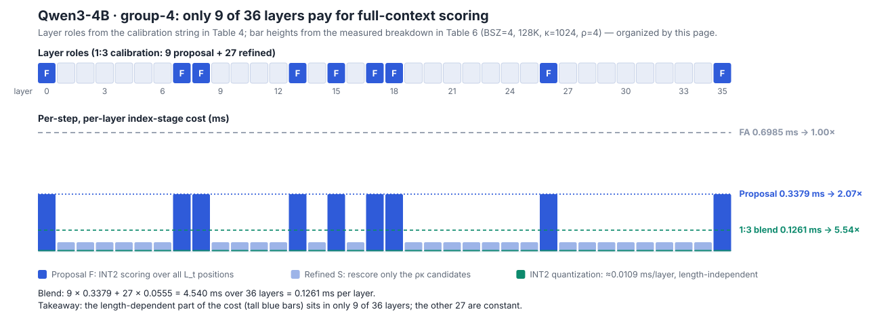
Self-drawn:Layer roles × per-layer index-stage cost for Qwen3-4B (group-4) — only 9 of 36 layers carry the cost that grows with context.
Top: the 36 cells are the 36 layers, a dark F is a proposal layer and a pale cell a refined layer, positioned exactly as in the
Qwen3-4B group-4 calibration string FSSSSSSFFSSSSFSFSFFSSSSSSSFSSSSSSSSF of Table 4
(layers 0, 7, 8, 13, 15, 17, 18, 26 and 35).
Bottom: each layer's index-stage cost at one decoding step, scaled from the Table 6 measurements at BSZ=4 and 128K —
a proposal layer is 0.0109 (quantization) + 0.2930 (proposal construction) + 0.0340 (sparse decode) ≈ 0.338 ms, while a refined layer is
0.0109 + 0.0106 + 0.0340 ≈ 0.056 ms; the thin green band at the base is the INT2 quantization both layer types pay, fixed at ≈0.011 ms.
The three dashed lines are the reference levels: FlashAttention at 0.6985 ms, the 1:3 blend at 0.1261 ms per layer, and a single proposal layer at 0.3379 ms.
The conclusion is a glance away: there are only nine tall bars, and the other twenty-seven have a height that does not depend on context length;
the blending arithmetic [estimated] is 9 × 0.338 + 27 × 0.056 = 4.540 ms over 36 layers = 0.1261 ms per layer, i.e. 5.54× FlashAttention,
which lands on the same value as the BSZ=4 curve of the paper's Figure 6b at 128K.
The chart also exposes the scheme's own weakness: those twenty-seven short bars are not zero, they are a ≈0.056 ms constant, so the shorter the context,
the larger that constant's share of total latency — which is the crossover discussed in the closing section.
Organized from Table 4 (Report p.16) and Table 6 (Report p.17); the layer count and the blend are this page's estimate
Level 1 — inside the kernel
A proposal layer and a refined layer differ in exactly one stage. Both run the INT2 decode and the sparse decode; the difference is whether the index stage is a full proposal construction or a local refinement, which the paper writes as two sums:
Whatever is true of that middle term is true of the layer. Figure 6a is the measurement, and Figure 6b is what happens to the blend when the batch and the context grow.
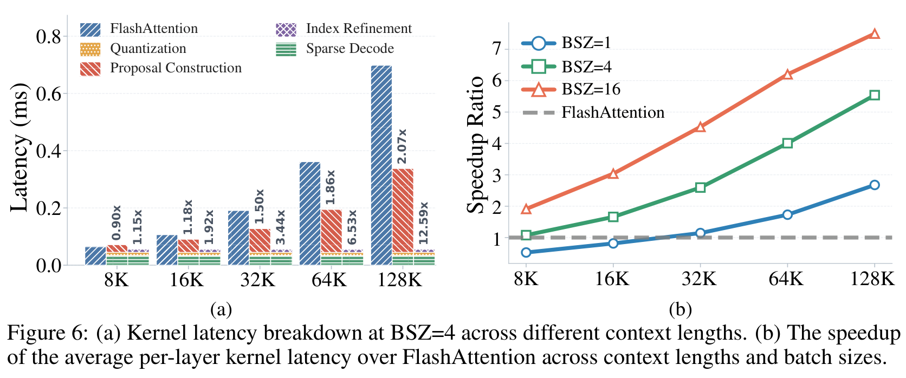
Figure 6: (a) Kernel latency breakdown at BSZ=4 across different context lengths. (b) The speedup of the average per-layer kernel latency over FlashAttention across context lengths and batch sizes.
Panel (a): the FlashAttention bar (hatched) grows from 0.06 ms at 8K to 0.70 ms at 128K; the Prism stacks next to it grow only through their orange "proposal construction" segment. The annotated pairs are per-layer-type speedups, and they are the sentence the figure exists to say — at 128K a proposal layer is 2.07× faster than FlashAttention while a refined layer is 12.59×, and the 12.59 has a flat 0.011 ms index stage inside it that does not care about context. Panel (b): the blended speedup of the 1:3 schedule rises with both axes and reaches 7.50× at 128K with BSZ=16. Note the two places where the curve dips below the dashed FlashAttention line: BSZ=1 is slower than dense until about 32K. The method is a long-context, large-batch proposition, and the figure says so.Report p.8
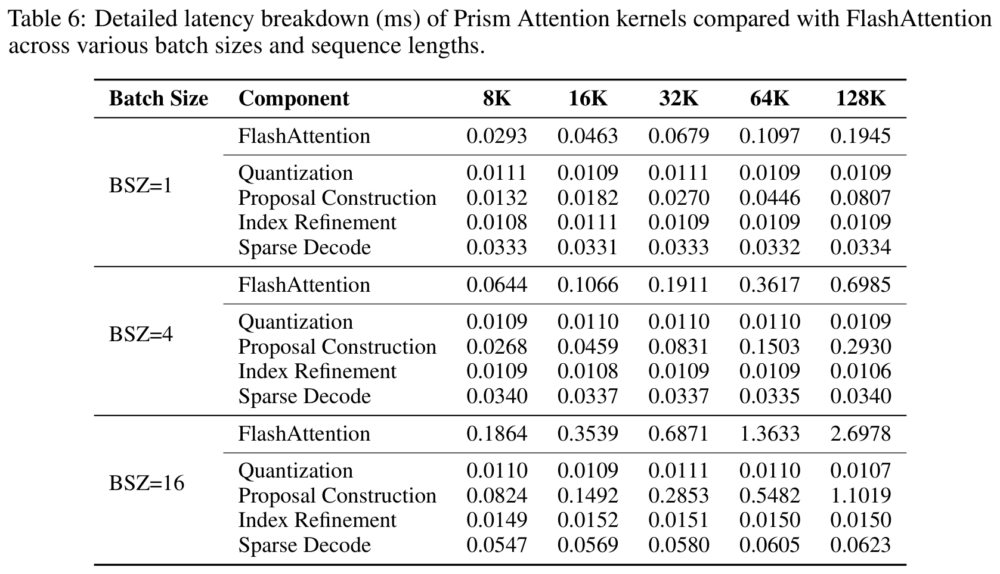
Table 6: Detailed latency breakdown (ms) of Prism Attention kernels compared with FlashAttention across various batch sizes and sequence lengths.
The table is the raw material for every claim in this section, so read the two rows that do not move. Quantization sits at 0.0107–0.0111 ms and index refinement at 0.0106–0.0152 ms across the entire grid — 15 cells, five context lengths, three batch sizes, no trend with context length. Proposal construction is the only index stage with a length term: 0.0807 → 0.2930 → 1.1019 ms at BSZ 1/4/16 as context goes 8K → 128K, roughly linear, which is the full-context scoring pass the INT2 keys were introduced to make cheap. Sparse decode also grows with batch (0.0334 → 0.0623 ms) but barely with context, as it should: it touches κ tokens regardless. The blended per-layer cost at 128K and BSZ=16 works out to (1.1749 + 3 × 0.0880)/4 = 0.360 ms against FlashAttention's 2.698 ms [estimated], i.e. 7.50×.Report p.17
That blend is worth dwelling on, because it is where the "only 1/4 of the layers pay" story gets its arithmetic. At 128K and BSZ=16 the proposal layers consume 1.1749 ms each and the refined layers 0.0880 ms each; after averaging, 81.7% of the total per-layer cost still comes from the 25% of layers that build proposals [estimated]: (1.1749/4) / 0.3597 = 81.7%. The schedule concentrates the work but does not dilute it — which is why the INT2 quantization of the proposal pass, not the sharing ratio, is the dominant lever, and why the group-9 configuration used later on GLM-5.2 is faster still.
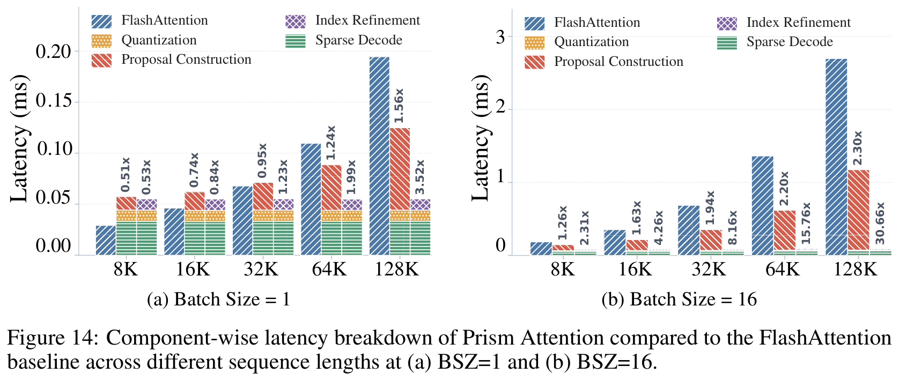
Figure 14: Component-wise latency breakdown of Prism Attention compared to the FlashAttention baseline across different sequence lengths at (a) BSZ=1 and (b) BSZ=16.
The same decomposition as Figure 6a, drawn at the two batch extremes, with the per-layer-type speedups annotated on every stack. At BSZ=1 the pair reads 0.51× / 0.53× at 8K — Prism is slower than dense on both layer types — and only reaches 1.56× / 3.52× at 128K, because at batch 1 the FlashAttention kernel is latency-bound rather than bandwidth-bound and the 2-bit scoring pass has nothing to amortise against. At BSZ=16 the same pair reads 1.26× / 2.31× at 8K and 2.30× / 30.66× at 128K: the refined-layer speedup grows by an order of magnitude with batch, the proposal-layer speedup by less than a factor of two. The visual invariant is the pale "index refinement" sliver, which stays the same height in every stack of both panels — a flat bar in a figure whose every other bar grows is the clearest possible statement that the refinement is context-independent.Report p.18
Level 2 — the served model
The kernel numbers above are measured in isolation. Table 7 re-measures the same kernels after they are compiled into SGLang, where each layer is a single fused CUDA-graph chain rather than four separable stages, at a 2K sparse budget and the tensor shapes of one TP8 rank (4 query heads, 1 KV head, head dimension 128).
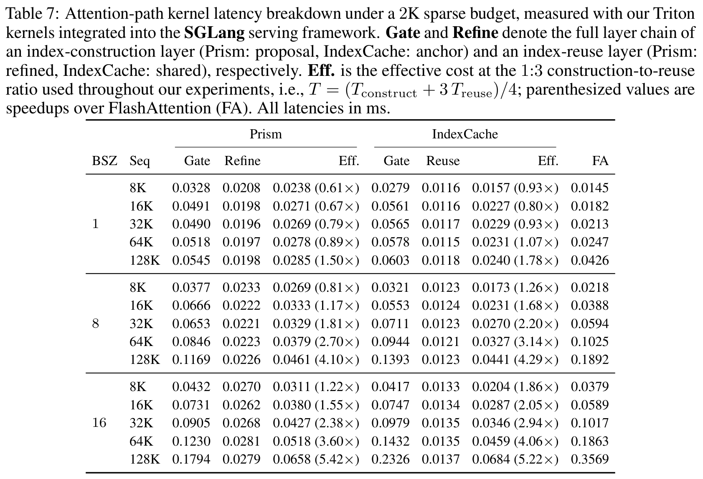
Table 7: Attention-path kernel latency breakdown under a 2K sparse budget, measured with our Triton kernels integrated into the SGLang serving framework. Gate and Refine denote the full layer chain of an index-construction layer (Prism: proposal, IndexCache: anchor) and an index-reuse layer (Prism: refined, IndexCache: shared), respectively. Eff. is the effective cost at the 1:3 construction-to-reuse ratio used throughout our experiments, i.e., T = (Tconstruct + 3 Treuse)/4; parenthesized values are speedups over FlashAttention (FA).
Three readings. First, Prism's Refine column is pinned at 0.0196–0.0281 ms regardless of context and batch — a 0.0085 ms drift across a 16× change in sequence length, versus 0.0328 → 0.1794 ms for the Gate column. Second, Prism's Gate is genuinely more expensive than IndexCache's anchor at short contexts (0.0328 vs 0.0279 ms at 8K, BSZ=1): the INT2 pass plus the wider TopK are a fixed cost that has nothing to amortise against yet. Third, that gap disappears as the workload grows and reverses by 128K/BSZ=16, where Prism's Gate is 0.1794 ms against IndexCache's 0.2326 ms — cheaper index construction at the long end, which is the whole point of quantizing it. The Eff. column is the bottom line: 5.42× over FlashAttention at 128K/BSZ=16, and still 0.61× (slower than dense) at 8K/BSZ=1.Report p.18
Level 3 — the end-to-end step
Finally, per-step decoding latency measured inside SGLang on Qwen3-4B at a 2K sparse budget. This is the number in the abstract, and Figure 7 and Table 8 are the same measurement presented twice — as bars and as a grid — which is convenient, because the grid makes the losses visible.
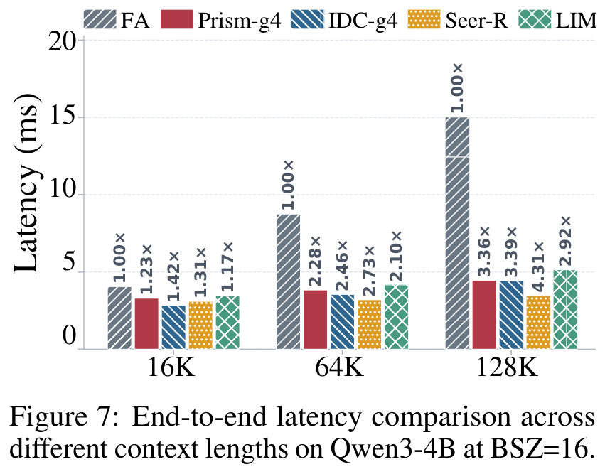
Figure 7: End-to-end latency comparison across different context lengths on Qwen3-4B at BSZ=16.
At 128K the FlashAttention bar is 15.03 ms and Prism-g4 is 4.47 ms, the 3.36× the abstract quotes; the multiplier grows with context from 1.23× at 16K and 2.28× at 64K. But the bars also show what the headline hides: at 128K, IndexCache-g4 is marginally ahead of Prism (4.43 ms, 3.39×), Seer-R is faster still (3.48 ms, 4.31×), and the group-9 rows of Table 8 are faster than both. Prism's claim is therefore not "fastest sparse decoder" but "best accuracy at a competitive latency" — the accuracy half of that sentence lives in Tables 1–2 and in Figure 5, and the two have to be read together. The comparison that matters for the method itself is Prism-g4 against IDC-g4, since they differ only by the refinement: 0.7% slower at 128K, 8.0% at 64K and 15.7% at 16K.Report p.8
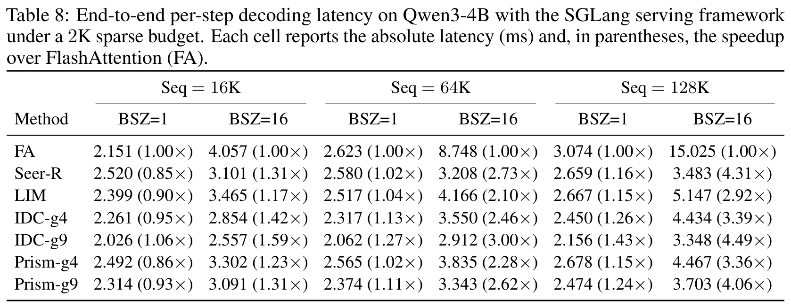
Table 8: End-to-end per-step decoding latency on Qwen3-4B with the SGLang serving framework under a 2K sparse budget. Each cell reports the absolute latency (ms) and, in parentheses, the speedup over FlashAttention (FA).
The tabular twin of Figure 7, extended to BSZ=1. Read the BSZ=1 half first, because it is where the method loses: at 16K and 64K, Prism-g4 is slower than FlashAttention (2.492 vs 2.151 ms and 2.565 vs 2.623 — the second is a narrow win, the first a clear loss) and every sparse method is in the same neighbourhood, because at batch 1 nothing is bandwidth-starved. Then read the BSZ=16 column: 15.025 ms for FlashAttention against 4.467 for Prism-g4, 4.434 for IDC-g4, 3.703 for Prism-g9 and 3.483 for Seer-R. The g4→g9 step is instructive — halving the number of proposal layers buys 0.76 ms at 128K and costs accuracy (see the group-9 rows of Table 3) — and it is the configuration the GLM-5.2 experiments in Section 7 lean on.Report p.18
Stated as a deployment rule, the picture is consistent across all three levels: Prism wins when the cache is large enough that the attention path is bandwidth-bound and the batch is large enough that the kernel is not latency-bound. Below roughly 32K tokens, or at batch 1, it is a wash or a regression, and the paper's own tables say so.
Takeaway: the systems contribution is not a faster kernel but a cheaper schedule — one layer in four does a full-context pass on 2-bit keys and the other three do a length-free local re-rank, which is why the blended speedup rises monotonically with context and batch while its own internal overhead (the 15.7% → 8.0% → 0.7% premium over IndexCache) shrinks toward nothing.
07 · Appendix analyses
Appendix: does the observation hold elsewhere?
Everything in Section 3 was measured on one model family, at one length, on mathematics. The appendices exist to answer the obvious objection — that localized drift is a Qwen artefact, or a 8K artefact, or a maths artefact — and then, in Appendix E, to show the method running on a model it was not designed for. Each appendix figure keeps the same two-panel layout, which makes the whole group readable as a single experiment repeated under three different swaps.
How to read the paired bars. In Figures 9, 10 and 11 the left panel puts two bars side by side for each of the three rank bands: the solid bar is the index overlap ratio (what share of the refined layer's 128 indices fall in that band) and the hatched bar is the attention-mass ratio (what share of the refined layer's total attention score those indices carry). Both are normalised over the refined layer's own top-128, so each triple sums to 100%. The right panel asks a different question: of the attention score that rigid reuse already covers, how much extra does expanding the proposal from top-128 to top-512 recover, bucketed by how good the original coverage was.
B.1 — across architectures, including MLA
Qwen3-4B and DeepSeek-R1-Distill-Llama-8B both use GQA; GLM-4.7-Flash uses MLA. All three are measured on 8K mathematical-reasoning sequences with the Figure 2 protocol.
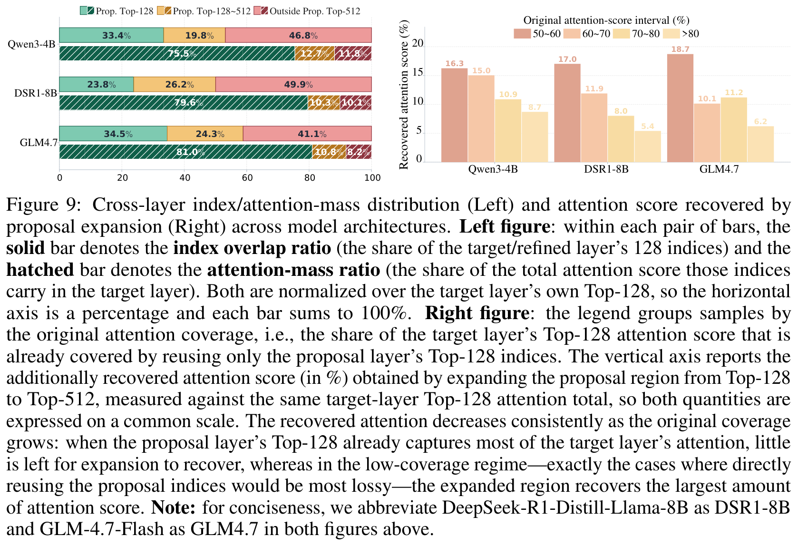
Figure 9: Cross-layer index/attention-mass distribution (Left) and attention score recovered by proposal expansion (Right) across model architectures. Left figure: within each pair of bars, the solid bar denotes the index overlap ratio (the share of the target/refined layer's 128 indices) and the hatched bar denotes the attention-mass ratio (the share of the total attention score those indices carry in the target layer). Both are normalized over the target layer's own Top-128, so the horizontal axis is a percentage and each bar sums to 100%. Right figure: the legend groups samples by the original attention coverage, i.e., the share of the target layer's Top-128 attention score that is already covered by reusing only the proposal layer's Top-128 indices. The recovered attention decreases consistently as the original coverage grows.
The left panel is the strongest single piece of evidence in the paper. Index overlap in the shared top-128 band is only 33.4% for Qwen3-4B, 23.8% for DSR1-8B and 34.5% for GLM4.7 — but the attention mass carried by those same indices is 75.5%, 79.6% and 81.0%. The tokens that migrate between layers are numerous and individually unimportant, and that asymmetry is precisely what makes a candidate pool viable: catching the tail is cheap because the tail carries little weight. It also holds across a GQA-vs-MLA divide, which rules out the explanation that this is an artefact of one attention layout. The right panel adds the corollary: the lower the original coverage, the more the expansion recovers — in the regimes where rigid reuse is most lossy, the pool has the most to give back.Report p.14
B.2 — across context lengths
The same measurement at 4K, 8K and 16K on Qwen3-4B, with everything else fixed.
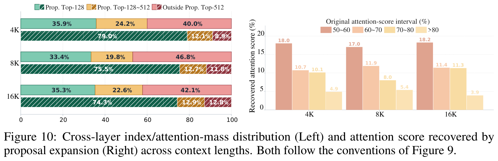
Figure 10: Cross-layer index/attention-mass distribution (Left) and attention score recovered by proposal expansion (Right) across context lengths. Both follow the conventions of Figure 9.
The three rows barely move: index overlap in the shared band is 35.9% at 4K, 33.4% at 8K and 35.3% at 16K, and the captured attention mass is 79.0%, 75.5% and 74.3%. Captured attention drifts down by about five points as the context quadruples — the same direction as Figure 1's decay, and mild enough that the design does not need a length-dependent ρ over this range. The right panel shows the recovered score rising as original coverage falls, with the low-coverage buckets recovering the most, which is the same ordering Figure 9 established across architectures. Read together with Figure 1, the appendix makes a cleaner claim than the main text does: pairwise overlap at a fixed layer offset degrades with length, but the structure of the degradation is stable, and it is the structure the method exploits.Report p.14
B.3 — across task types
Four task families at 8K: mathematical reasoning, summarisation, few-shot learning and multi-document QA, ten samples each, all from the benchmark suites the main experiments already use.
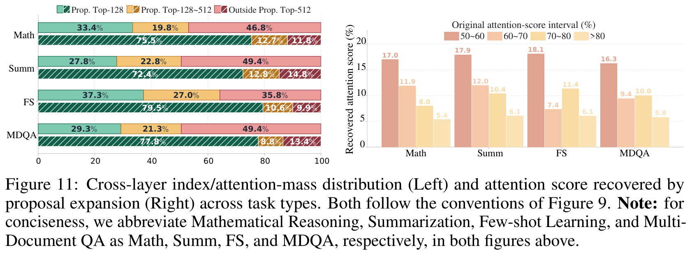
Figure 11: Cross-layer index/attention-mass distribution (Left) and attention score recovered by proposal expansion (Right) across task types. Both follow the conventions of Figure 9. Note: for conciseness, we abbreviate Mathematical Reasoning, Summarization, Few-shot Learning, and Multi-Document QA as Math, Summ, FS, and MDQA, respectively, in both figures above.
This is the one appendix panel where the rows visibly differ, and the difference is the interesting part. Few-shot learning is the most cross-layer-stable task (37.3% index overlap, 79.5% mass captured); summarisation is the least (27.8%, 72.4%); MDQA and mathematics sit in between. A 9.5-point spread in index overlap across tasks is real evidence that drift is task-dependent, and it supports the paper's own admission in Appendix F that the calibration corpus — a single mathematical-reasoning set — is a design variable it chose not to explore. For the mechanism it is reassuring rather than damaging: the mass captured stays above 72% in every task, so the pool remains worth having everywhere, even where it is least well matched.Report p.15
B.3 (continued) — the same effect in raw overlap matrices
Figure 3 showed the 36×36 coverage matrix on AIME24. Figure 12 repeats it on GPQA and MATH500, with both a top-128 and a top-256 proposal, so the effect can be checked without averaging over dataset or over layer.
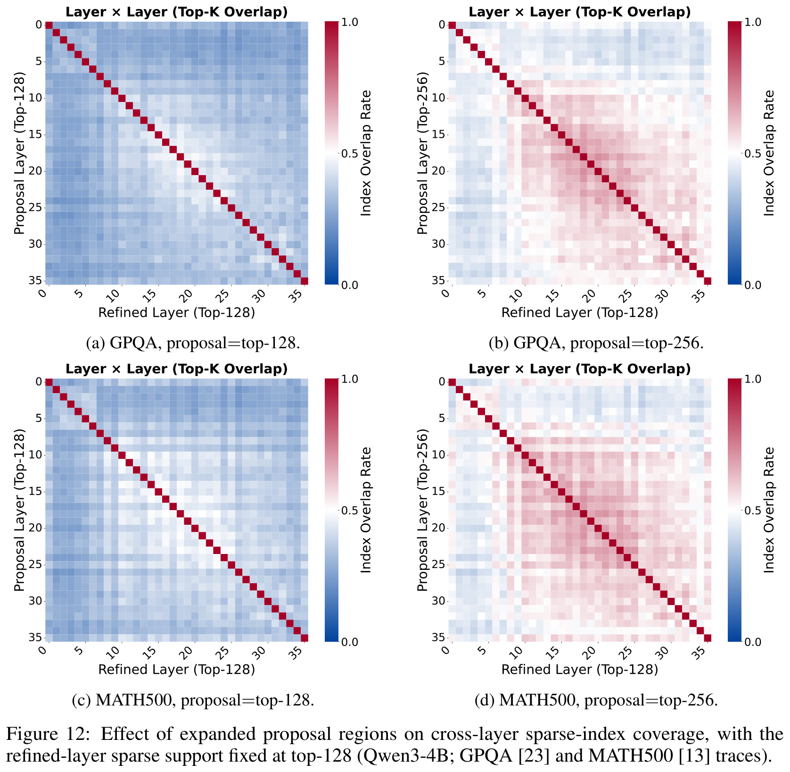
Figure 12: Effect of expanded proposal regions on cross-layer sparse-index coverage, with the refined-layer sparse support fixed at top-128 (Qwen3-4B; GPQA [23] and MATH500 [13] traces).
Four panels in a 2×2: GPQA with a top-128 proposal (a) and a top-256 proposal (b), then MATH500 with the same pair (c, d). Panels (a) and (c) are the rigid-reuse picture — off-diagonal cells sit in the blue end of the bar, worsening with distance from the diagonal. Panels (b) and (d) are the same matrices with the pool merely doubled, and the field turns warm across the board. Because the improvement is uniform rather than confined to a few layers, it cannot be an artefact of a lucky anchor: doubling the candidate window shifts the whole off-diagonal distribution, on both traces, exactly as Figure 3 did on AIME24.Report p.15
C — how stable is the layer assignment?
Prism inherits IndexCache's partition, which means it inherits the question of whether that partition is fragile. Appendix C answers with two exhibits: the assignment recovered from five different calibration subsets, and the downstream accuracy of each.
Table 4 first records the partitions the search actually returns. The notation differs from the GLM-5.2 table later in the appendix and the paper flags this — here F is a proposal layer and S a refined one, and the string is the layer sequence from 0 to 35.
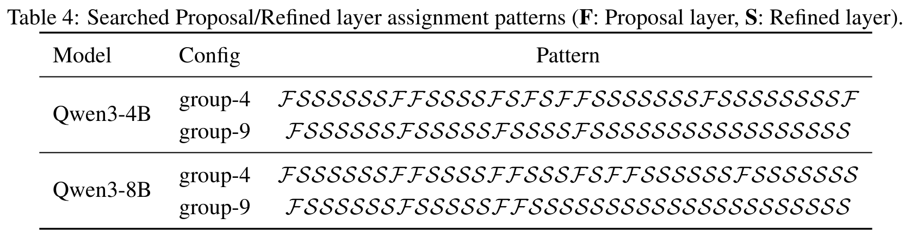
Table 4: Searched Proposal/Refined layer assignment patterns (F: Proposal layer, S: Refined layer).
Four 36-character strings, one per model × group. Counting the letters gives the schedule the rest of the paper uses [organized]: Qwen3-4B group-4 is FSSSSSSFFSSSSFSFSFFSSSSSSSFSSSSSSSSF with 9 F (layers 0, 7, 8, 13, 15, 17, 18, 26, 35) and 27 S; group-9 gives 4 F (0, 7, 13, 18). Two patterns are worth noticing. The search never places the first layer anywhere but 0, which is what one would expect — layer 0 has no predecessor to inherit from. And the proposal layers cluster rather than distribute evenly (7–8 and 17–18 are adjacent pairs), so the "1 in 4" ratio is an average, not a rhythm; some spans of the network run eight refined layers deep. Those are exactly the spans where the ρ = 4 pool has to hold.Report p.16
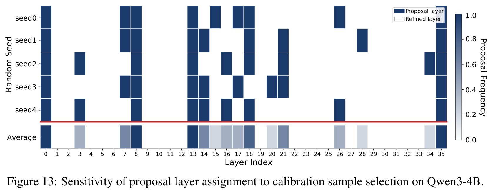
Figure 13: Sensitivity of proposal layer assignment to calibration sample selection on Qwen3-4B.
Five seeds by 36 layers; a dark cell means that layer was chosen as a proposal layer. Six layers — 0, 7, 8, 13, 18 and 35 — are dark in every seed, and the frequency bar along the bottom reads 1.0 for them. The contested layers (3, 14, 16, 17, 20, 21, 26, 28, 34) flip between seeds, at frequencies from about 0.2 to about 0.8 on the average bar. The paper highlights layers 0, 8, 13 and 35 as "almost always" proposal layers; the figure shows 7 and 18 behaving the same way. The practical reading is that the search has a stable core and a noisy periphery, which is a much better property than a stable-looking point estimate: it means the calibration is finding something structural about where attention reorganises, not fitting the sample.Report p.16
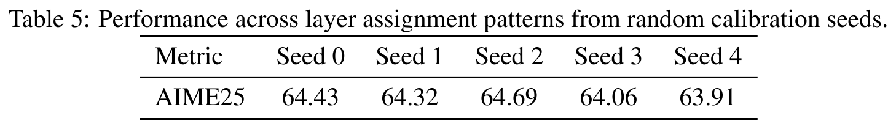
Table 5: Performance across layer assignment patterns from random calibration seeds.
Five rows, κ = 1024, ρ = 4, AIME25 only: 64.43, 64.32, 64.69, 64.06, 63.91. The spread is 0.78 points between the best and worst seed [estimated]: 64.69 − 63.91, against a mean of 64.28. That is roughly the size of the difference the paper itself leans on when comparing Prism to IndexCache (1.27 points on 4B), which is worth keeping in mind — but it also means the mechanism is insensitive to which partition it is handed, and that is the claim the table is making. A method whose accuracy moved by several points across seeds would need the calibration to be part of its contribution; Prism does not.Report p.17
E — the GLM-5.2 scaling experiment
The most interesting appendix is the last: a 78-layer production model whose native configuration is an IndexCache schedule, evaluated at a unified κ = 2048 and ρ = 4. Here the notation changes again — F (Full) builds indices from the full context, S (Shared) copies them, and R (Refined) does Prism's local re-selection — and the experiment is designed as a controlled subtraction: take the model's own 21F57S schedule, cut the F layers to 10 to make it cheaper, watch what breaks, then add R layers back.
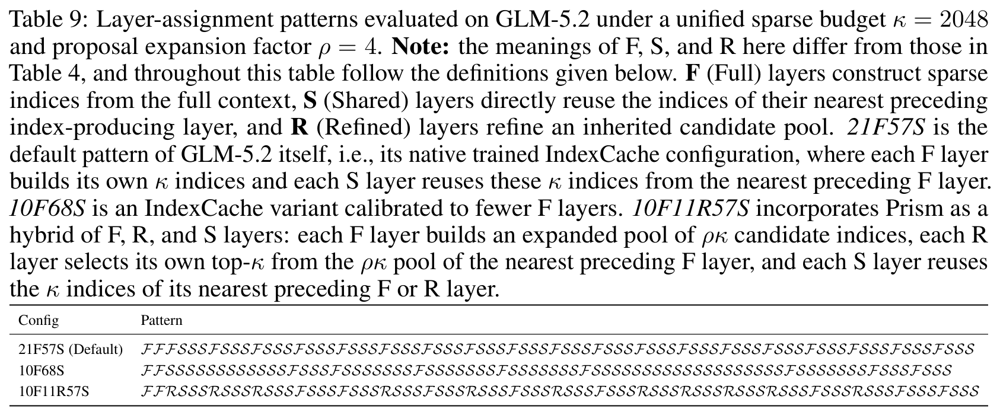
Table 9: Layer-assignment patterns evaluated on GLM-5.2 under a unified sparse budget κ = 2048 and proposal expansion factor ρ = 4. Note: the meanings of F, S, and R here differ from those in Table 4, and throughout this table follow the definitions given below. F (Full) layers construct sparse indices from the full context, S (Shared) layers directly reuse the indices of their nearest preceding index-producing layer, and R (Refined) layers refine an inherited candidate pool. 21F57S is the default pattern of GLM-5.2 itself, i.e., its native trained IndexCache configuration.
Three 78-character strings. 21F57S is the model as shipped and is the accuracy reference, not a fair cost reference. 10F68S keeps the IndexCache mechanism but halves the number of index-building layers — the cheap configuration whose accuracy loss the next table quantifies. 10F11R57S is the hybrid: the same ten F layers as 10F68S, eleven R layers inserted to consume their pools, and 57 S layers that copy from whichever F or R layer precedes them. The design of the comparison is what makes it persuasive: the F budget is held constant between the two 10F variants, so any accuracy recovered is attributable to the eleven R layers and not to extra index construction.Report p.19
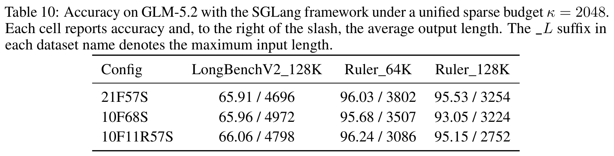
Table 10: Accuracy on GLM-5.2 with the SGLang framework under a unified sparse budget κ = 2048. Each cell reports accuracy and, to the right of the slash, the average output length. The _L suffix in each dataset name denotes the maximum input length.
The story is in the RULER_128K column. Cutting F layers from 21 to 10 costs 2.48 points (95.53 → 93.05) — that is the price of cheap static reuse on a 78-layer model, and it is exactly the failure mode Section 3 predicts. Adding eleven R layers at the same F budget recovers all but 0.38 of it (95.15), while LongBenchV2_128K slightly improves over the default (66.06 vs 65.91) and RULER_64K improves too (96.24 vs 96.03). Note also the output-length column: the hybrid produces shorter answers on RULER (2,752 vs 3,254 tokens at 128K) and slightly longer ones on LongBenchV2, which is a reminder that these averages are accuracy-and-verbosity pairs, not accuracy alone.Report p.19
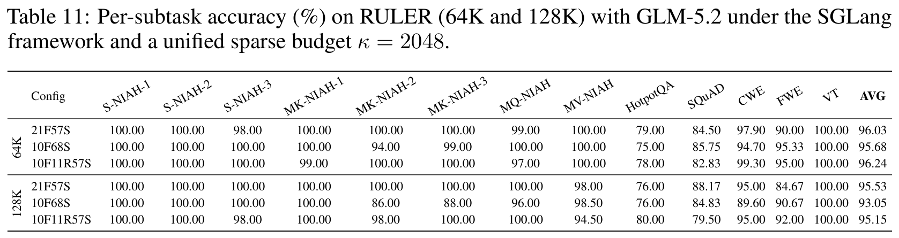
Table 11: Per-subtask accuracy (%) on RULER (64K and 128K) with GLM-5.2 under the SGLang framework and a unified sparse budget κ = 2048.
Thirteen RULER subtasks across two lengths. Three of them — the two single-needle variants and VT — read 100.00 in every one of the six cells, so the aggregate's 2.48-point loss has to come from a handful of columns, and it does: at 128K, 10F68S falls to 86.00 and 88.00 on the second and third multi-key needle variants, which the default holds at 100.00, and to 89.60 on CWE against 95.00. The hybrid puts those three back at 98.00, 100.00 and 95.00. The recovery is not uniform, and the exceptions are informative: SQuAD drops from 88.17 to 79.50 under the hybrid while HotpotQA rises from 76.00 to 80.00 and MV-NIAH eases from 98.00 to 94.50 — a re-ranking mechanism changes which tokens each layer sees, so per-column give-and-take is what one should expect. The tasks that break under rigid reuse are the needle-in-a-haystack ones, where the missing index really is the answer, and those are the tasks the refinement restores.Report p.19
Takeaway: the appendix converts a single-model observation into a general one — the index/mass asymmetry holds under GQA and MLA, at 4K through 16K, on maths, summarisation, few-shot and multi-document QA, and on a 78-layer production model with a native sharing schedule. It also converts the method's central claim from "recovers accuracy" into something sharper: at a fixed index-construction budget on GLM-5.2, refinement recovers 2.10 of the 2.48 points that cheap static reuse costs on RULER_128K.
08 · Discussion
Discussion: which bill does it actually pay?
The paper's title says "efficient inference," and the abstract's 3.4× invites the reading that this is a speed paper that happens not to lose accuracy. Read closely, it is the other way round: it is an accuracy-recovery paper whose selling point is that the recovery is nearly free. The distinction decides which of its numbers you should trust and which you should re-measure.
The three-part ledger
What Prism changes about the cost of a decoding step can be stated without any of its own tables, which is a good sign for the mechanism. First, index construction happens at one layer in four instead of every layer — a 4× reduction in the number of full-context passes, independent of the hardware. Second, that remaining pass reads a 2-bit key copy rather than a BF16 one — an 8× reduction in bytes moved [estimated], which is where the FLOPs are not but the bandwidth is. Third, each of the other three layers pays a re-rank whose cost is bounded by ρκ rather than $L_t$, measured at 0.011 ms and flat from 8K to 128K.
Those three effects are not additive in wall-clock, and the paper is careful never to claim they are. What Table 6 and Table 7 show is that the second one dominates: at 128K and BSZ=16 the proposal layer's construction term is 1.1019 ms out of a 1.1749 ms proposal layer, while the refinement is 0.0150 ms. Without the INT2 compression, the 4× reduction in construction frequency would leave a per-step cost still dominated by index work; with it, the blended layer reaches 7.50× over dense at that operating point.
Where the evidence is strongest — and where it is thinnest
Three results in this paper would be hard to attribute to noise. The ablation's recovery path in Table 3 (50.05 → 59.22 → 62.60 → 64.43 on AIME25) is large, monotone and mechanistically interpretable. The GLM-5.2 subtraction in Table 10 (95.53 → 93.05 → 95.15 at constant F budget) is a controlled experiment on a model the authors did not design. And the refinement's flatness — 0.011 ms across a 16× change in context, visible as the same pale sliver in every bar of Figure 14 — is a fact about the implementation, not an estimate from a benchmark.
The thinner results are worth naming too. The 3.36× headline requires a 128K context and batch 16: at 16K and batch 1 the same configuration is slower than dense FlashAttention (2.492 vs 2.151 ms in Table 8), and at 128K batch 1 it is only 1.15×. Prism-g4 is not the fastest sparse decoder on the authors' own table: at 128K and BSZ=16, IDC-g9 reaches 3.348 ms, Seer-R 3.483 ms and the paper's own Prism-g9 3.703 ms, all ahead of Prism-g4's 4.467 ms — so the claim being made is Pareto dominance at a given accuracy, not raw speed. And every accuracy number in the paper is a single evaluation of a single checkpoint with no confidence intervals, on benchmarks where 0.5 points sits inside the resampling noise; the abstract also rounds 3.36× to 3.4×, a habit worth noticing when comparing its numbers to the tables.
Where the lineage comes from
The paper is unusually explicit about which parts are borrowed. The table below reconstructs that account; the middle column uses the paper's own inline citations and does not add literature the paper does not cite.
Component-by-component provenance (compiled from the paper's own inline citations; the reference list itself was not re-checked, and no outside attribution has been added)
Component
Upstream, as labelled in the paper
What this paper changes
Cross-layer index reuse
TidalDecode (Yang et al., 2024); LessIsMore (Yang et al., 2025); OmniKV (Hao et al., 2025)
The reused object becomes an expanded candidate region rather than a decided top-κ set; the consumer re-ranks instead of copying.
Anchor-layer placement
Kascade (Deshmukh et al., 2025); HyLRA (Ai et al., 2026)
Not changed. The paper treats placement as out of scope and adopts a single inherited partition for all evaluations.
Offline calibration under error propagation
IndexCache (Bai et al., 2026)
Inherits the greedy search, the 1:3 anchor ratio, the 64-sample OpenR1-MATH-220k subset and the token-level cross-entropy objective, then freezes them; changes only the transmitted payload and the refined layer's work.
Token-level sparse attention at production scale
DeepSeek Sparse Attention (Liu et al., 2025); GLM-5 (Zeng et al., 2026)
Keeps the paradigm and attacks its per-layer index-construction cost; the GLM-5.2 experiment runs on a model whose native schedule is already an IndexCache pattern.
Low-bit scoring for candidate selection
No upstream is cited for the quantized proposal; the paper presents it as its own component
Group-wise asymmetric 2-bit quantization with per-group scale and zero-point (Eqs 7–8), plus a max-reduction across the query heads of a KV group so each key block is read once (Eq 9).
Kernels and serving
Triton (Tillet et al., 2019); SGLang
Custom decoding kernels measured under CUDA-graph replay, then fused into SGLang's per-layer graph at a 2K budget on one TP8 rank.
Evaluation corpora
Qwen3 (Yang et al., 2025); LongBench (Bai et al., 2024); AIME, MATH500 (Hendrycks et al., 2020), GPQA (Rein et al., 2023); OpenR1-MATH-220k (Hugging Face, 2025)
Reused unchanged, with the LongBench subset restricted to average input lengths above 8192 tokens and generation capped at 4096.
Citations follow the paper's own inline labels; this page did not verify the bibliography entries.
Not disclosed, worth testing next
The paper's own limitations section (Appendix F) is candid about one thing — the calibration partition is inherited and unexplored. The list below is this page's, and it is deliberately about things the paper does not report rather than things it reports badly.
The fidelity of the 2-bit proposal. The paper does not report how much INT2 scoring changes the ranking: no recall@κ of the quantized pool against a BF16 pool, no rank correlation, and no value for the group size $g$, which appears only as a symbol in $M = d/g$ (Eq. 7). Worth testing: pool recall and downstream AIME accuracy as a function of $g$ and of the bit-width $b$, since the entire proposal budget rests on the assumption that a 4-level score ranks well enough.
Memory. Nothing in the paper measures it. Prism keeps a BF16 K/V cache, a per-layer 2-bit key copy for scoring, and ρκ token ids per proposal layer; only latency is reported. Worth testing: peak HBM against IndexCache at equal batch, and how the extra INT2 cache behaves under paged-KV eviction and prefix caching, where a stored candidate pool can outlive the blocks it points at.
Prefill, throughput and TTFT. Every measurement is per-step decoding latency at a fixed batch; the paper does not report prefill cost, TTFT, tokens per second under continuous batching, or any mixed-length workload. Worth testing: whether the proposal/refined schedule survives chunked prefill and whether a 3.36× per-step win at a static batch 16 turns into a serving-throughput win at a realistic request mix.
Tensor-parallel behaviour of the max-reduction. Table 7 measures one TP8 rank holding 4 query heads and 1 KV head, so the group in Equation 9 is entirely local. The paper does not say what happens when the query heads of one KV group are split across ranks, which would turn a free maximum into a cross-rank reduction on the critical path. Worth testing: whether a KV group straddles ranks under common TP layouts, and whether the fix is a fused kernel or a small all-reduce.
How far the calibration transfers. The partition is searched on a mathematical-reasoning corpus at 32K with a 512-token budget, then frozen for 128K LongBench, RULER and a 78-layer model. Figure 11 shows drift is task-dependent (index overlap spans 27.8%–37.3% across four task types), yet the paper does not report what the mismatch costs. Worth testing: per-workload calibration, and whether ρ should be raised for the tasks that drift most rather than fixed at 4 for everything.
Takeaway: the contribution that will survive is not the 3.36× but the reframing — cross-layer sharing should transmit a region and let the consumer decide, because the drift it was designed to tolerate is concentrated exactly where a slightly larger region can reach. That reframing is cheap, training-free, and orthogonal to how the anchors are chosen, which is why it is likely to be absorbed into other people's indexers rather than shipped as a standalone method.
09 · Glossary
Glossary
Abbreviations in the prose carry a dotted underline; hover to see the expansion. The table below covers both the abbreviations and the symbols the equations use, so it doubles as a notation sheet.
Symbols and abbreviations used on this page (the paper's own notation, plus the benchmark and systems vocabulary it relies on)
Term
Expansion
What it means here
KV cache
Key–Value cache
The per-layer store of past keys and values that autoregressive decoding reads at every step; the object all of this paper's bandwidth arguments are about.
GQA
Grouped Query Attention
Several query heads share one key/value head. Makes the max-reduction of Eq. 9 necessary, since otherwise the same key block would be streamed once per query head.
MLA
Multi-head Latent Attention
The compressed-latent attention used by GLM-4.7-Flash; one of the three architectures the locality observation is checked on (Fig. 9).
DSA
DeepSeek Sparse Attention
The token-level sparse attention of DeepSeek-V3.2 (Liu et al., 2025), cited as the paradigm's production proof point.
LIM
LessIsMore
Baseline that merges per-head rankings at one selection layer into a cross-head token set and unions it with a recency window (Yang et al., 2025).
IDC
IndexCache
Baseline, and the source of Prism's layer partition: indexers at a few anchor layers, top-κ copied into the layers that follow (Bai et al., 2026). Written Prism-g4 / IDC-g4 for the 1:3 schedule.
Seer-R
SeerAttention-R
Block-level sparse decoding baseline with a self-distilled attention gate; block size 64, all layers sparse (Gao et al., 2025).
FA
FlashAttention
Dense baseline and the reference for every speedup in the paper.
TTFT
Time To First Token
Standard serving metric; the paper does not report it, which is one of the gaps flagged in Section 8.
TP
Tensor Parallelism
Model sharding across GPUs. The SGLang measurements use one TP8 rank: 4 query heads, 1 KV head, head dimension 128.
BSZ
Batch size
Concurrent sequences per decoding step; the speedups scale strongly with it, from 2.68× at BSZ=1 to 7.50× at BSZ=16 (128K).
SGLang
—
The serving framework the end-to-end and Table 7 measurements are taken in.
Triton
—
The kernel language the custom decoding kernels are written in (Tillet et al., 2019).
CUDA graph
—
Captured kernel-launch sequence replayed to remove launch overhead; the timing methodology for Tables 6–7.
κ
sparse budget
Tokens attended to per layer per step: 2048 in the main experiments, 1024 in the ablation and Figure 8's sweep.
ρ
proposal expansion factor
Pool size divided by budget: 4 for long context, 2 for reasoning. ρ = 1 reduces Prism to static reuse.
n
candidate-pool size
$n = \rho\kappa$: 8192 for long context, 4096 for reasoning.
F / S
Proposal / Refined layer
Prism's two layer types (Eqs 3–6). In the GLM-5.2 tables the letters are re-used for Full / Shared / Refined — the paper says so explicitly.
$C^{F}_{t}$
shared candidate cache
The $n$-token pool a proposal layer emits at step $t$ and every associated refined layer reads.
$L_t$
context length
Number of cached tokens available at decoding step $t$; the quantity the refinement's cost is independent of.
Index construction
—
The score-everything-then-take-top-κ pass. Performed by proposal layers only.
Index refinement
—
Prism's third operation: re-score the inherited pool and pick κ. 0.011 ms, flat in context length.
INT2
2-bit integer
Storage format of the key copy used for scoring: 4 levels per group element, 1/8 the bytes of BF16.
Group-wise asymmetric quantization
—
Split the head dimension into groups of size $g$; each group gets its own scale α and zero-point β, both taken from that group's max and min (Eqs 7–8).